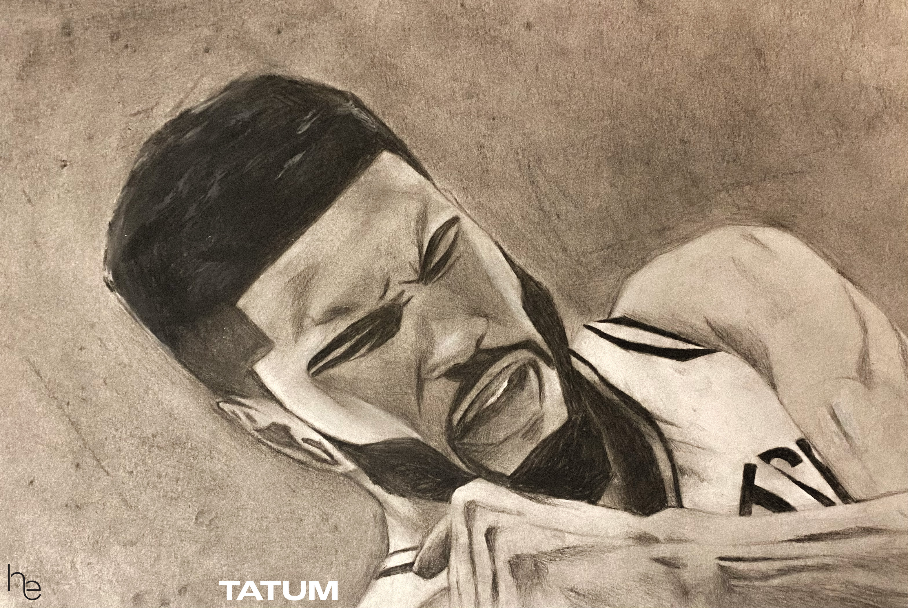

I am a huge celtics fan
who am I?
Hidear is my name as well as who I am. I'm from the Boston Area and have alway been into drawing; using it as way to escape the real world and explore within my realm of creativity.
favorite things to do
- go to celtics games
- watch cinema
- play basketball
- drawing
why art?
The world needs art. The definition of art is abstract and ambigous. I feel that art is a way to manipulate the real world in order to conceive our perspectives and emotions.
what is it all about?
Art surrounds us everywhere we are. It all depends in what you belive art is and on what you personally like.
types of art!
- paintings
- photography
- design